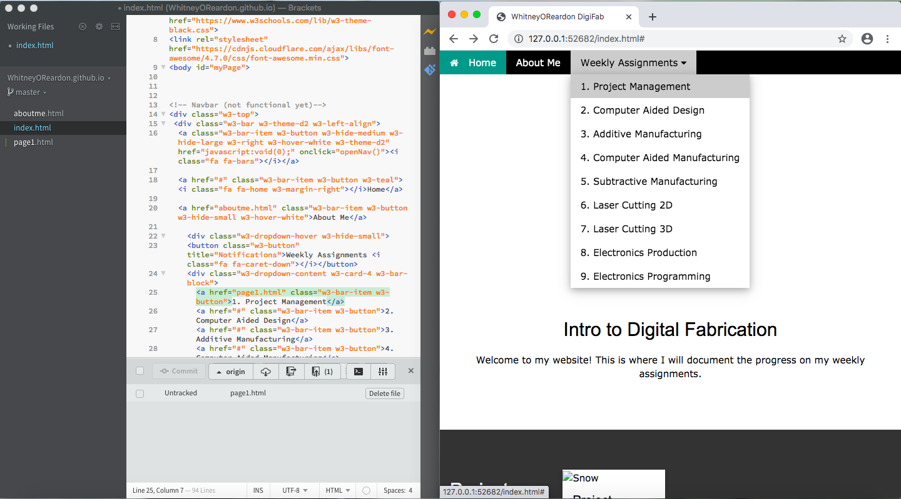

For this first assignment I created a website using GitHub and Brackets. In the process, I learned how to create and download a repository, and how to code using HTML and CSS.
Starting with GitHub
To begin, I made a GitHub account and created a repository.
Then, I saved the repository to my computer. I followed the instructions on "pages.github.com" to clone the empty repository to my desktop. Initially, I had an issue where the Terminal app gave me a message that I had to download some kind of developer tools before proceding, but after a few tries of cloning the repository, the message went away.
After that, I added an index.html file with the text "Hello World" written on it. Then, I used git commands to add, commit, and push my changes. By this point, I had a functioning website link "https://whitneyoreardon.github.io" with the sole text "Hello World".

Using Brackets
I downloaded a text editor called Brackets, where I edit my website's code from.
With Brackets Extension Manager I installed "Brackets Git". Then, I opened my repository in Brackets. After this, whenever I made changes to the code, I would save it, press "Commit", and then press "Git Push". With this, the code that I edit in Brackets is reflected when I search for my actual website in a browser.
Designing a Website
I used a website template from w3schools.com. The template I chose is called "Marketing / Website Template". After copying and pasting the template's code into Brackets, I began personalizing the website. Before this class, I had taken a course in Python, so it was not too difficult to learn some commands for HTML and CSS and apply them here. I referenced w3schools.com for specific instructions on how to code with these two programming languages.
First, I deleted all of the extra content that I didn't need, such as sections on products and pricing, from the marketing template. Then, I added my own text to the homepage. Also, I added and labeled more options to the dropdown menu, and eventually inserted images as well.

My next task was to create two new pages and link them to the "About Me" tab and the Week 1 assignment section. This took me a while to figure out how to do. I found many sites explaining how to make a 'link' to another webpage, but not how to create that second webpage from scratch. Eventually, I discovered that in order to do this I simply had to make a new file within my repository on GitHub.
After doing that, I linked the "About Me" page to my home page through some code, but when I tried pushing those changes I got a pop-up message saying that the push failed.
Based off of this message, I tried pressing the "Git Pull" button at the bottom right of the Brackets window, and this solved the problem. My website now had multiple functioning pages that I could navigate through!
After completing the setup for my website, I went went back through and added content to the "About Me" page and the Week 1 assignment. Lastly, I modified the colors and design layout to my preference.